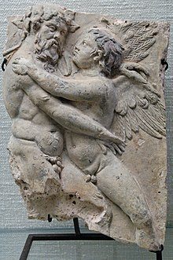
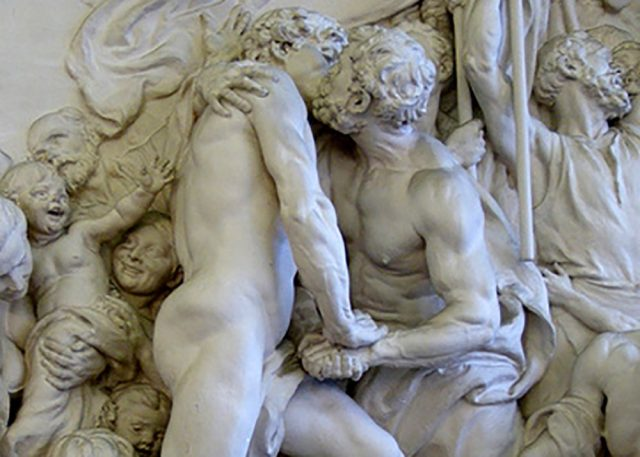

Aprendamos de historia
Oscuridad en la luz
Por muy oscura que sea, la historia debe ser contada. Debemos estar seguros de que todo el mundo conozca lo que ha pasado.
El colectivo LGBT ha estado históricamente muy discriminado por muchos sectores dentro de la historia... aunque no siempre fue así. En la antigua Roma, la práctica de la homosexualidad y bisexualidad era incluso más común que la práctica heterosexual. Empezó siendo condenadas algunas prácticas en el principio de la república romana, pero acabo siendo aceptada totalmente. Con la llegada del cristianismo, la homofobia empezó a ser vigente. Léase Homosexualidad en la Antigua Roma.
Con el paso del tiempo, todas las prácticas fueron censuradas, los que las hacían, recibían castigos que podían ir desde latigazos hasta la muerte de la persona por sus prácticas. Aun así, en la antigua Grecia y en Mesopotamia, eran prácticas muy habituales y era considerado lo más común, de hecho. Léase Homosexualidad en la antigua Grecia.
Incluso en la antigua China, en las dinastías Song, Ming y Qing, las prácticas homosexuales y bisexuales eran bastante comunes. Hay escritos y pinturas que muestran tales hechos, hasta de filósofos conocidos, claro caso de Zhuangzi, un filósofo reconocido en la historia china. Todo sería considerado común y no tendría sanción hasta 1740, año en el que se publicó la primera ley contra la homosexualidad. Léase Homosexualidad en China
En América, antes del 1942, en Norteamérica, había registros de que existía la transexualidad, llamados "dos almas", puesto que nacían de un género que no correspondía con lo que sentía. Hay registros que mostraban homosexualidad aceptada.
Los aztecas eran muy intolerantes, ya que quien lo practicaba, podía llegar a recibir un severo castigo, incluso la muerte para lesbianas, por ejemplo.
Los mayas, los toltecas y los incas parecían aceptar la homosexualidad, aunque los mayas podían condenarlo en ciertos casos. Los incas recibieron influencia de cronistas españoles como Pedro Cieza de León, Fray Gregorio García o Bernabé Cobo que ayudaron a la práctica de la homosexualidad en sacerdotes.
En Asia oriental hubo gran aceptación por aquel entonces. En las fachadas de templos hindúes se puede apreciar que había practicas homosexuales sin ningún tipo de problema.
En Japón, existe la Historia de Genji Monogatari donde se revela que hay relaciones de ese carácter.
En Europa siempre se fue más estricto en el tema. Debido a la alta influencia de la religión en los estatutos, la persecución estaba asegurada. Consideraban la homosexualidad como sodomía y condenaban su práctica, así como incluirlos en la persecución a la brujería por parte de la inquisición. Debido al mal ambiente respecto a la libertad sexual, apenas se pueden encontrar figuras importantes homosexuales en la historia europea
Todo esto fue en la época medieval, mientras que, si seguimos viendo hasta un tiempo más contemporáneo, podremos ver que las cosas se pusieron muy mal. Podemos comprobar que tanto el fascismo, como los nazis y la URSS condenaban la homosexualidad con, incluso, la muerte, debido a que lo consideraban degeneración e inferioridad. En el régimen nazi fueron metidos en los campos de concentración con un triángulo rosa boca abajo, señalando que ahí metían a los que practicaban la homosexualidad.
En Asia perdieron algunos derechos, al igual que en África, debido a la religión musulmana, aunque, hasta cierto momento, hubo bastante aceptación.
En Estados Unidos siempre ha sido objeto de debate, a pesar de tener figuras importantes, incluyendo cargos públicos, que eran homosexuales abiertos. Los casos de famosos más conocidos LGBT en Estados Unidos son: Harvey Milk, Ellen DeGeneres, Drew Barrymore y Lady Gaga.
En el mismo país, hubo unos disturbios en Stonewall debido a una redada que las autoridades hicieron contra un local de ambiente gay.Disturbios de Stonewall
Todos los derechos reservados // Curso de HTML / CSS Wikipedia.es